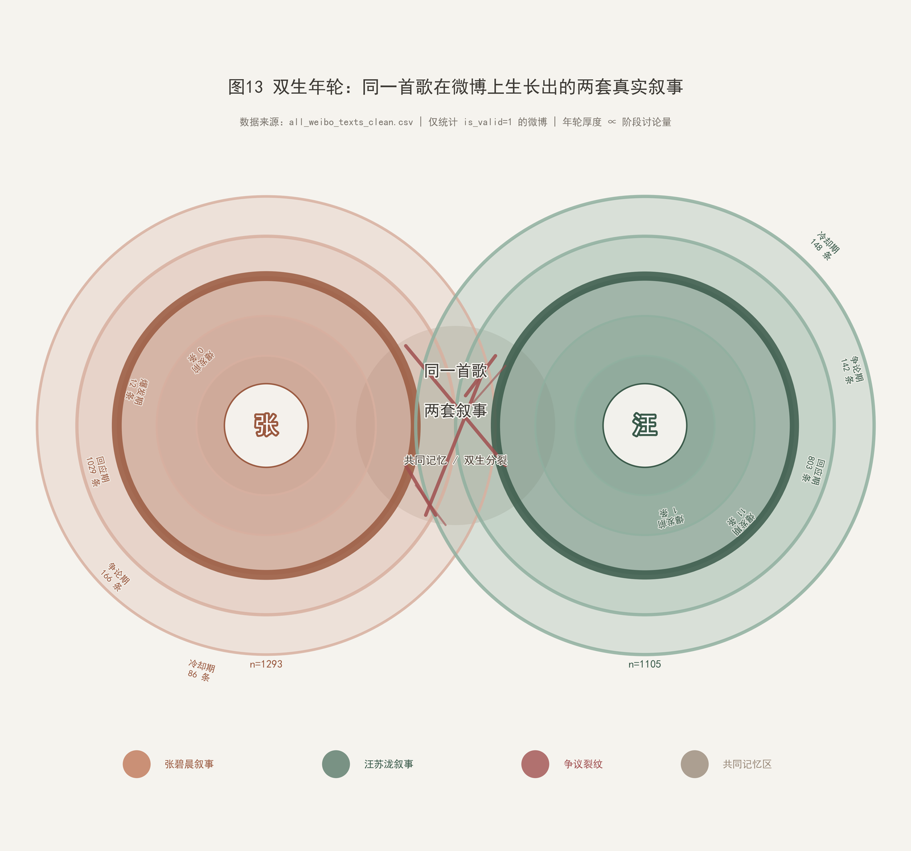
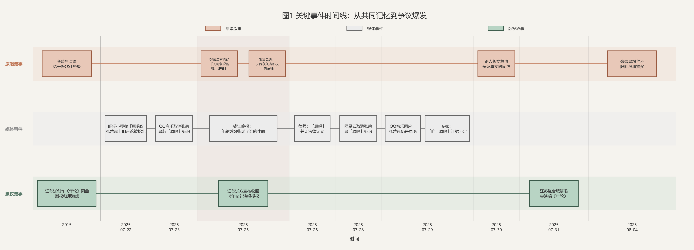
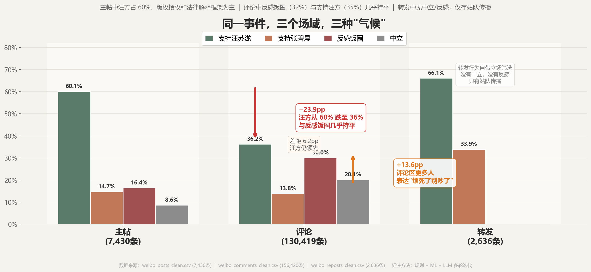
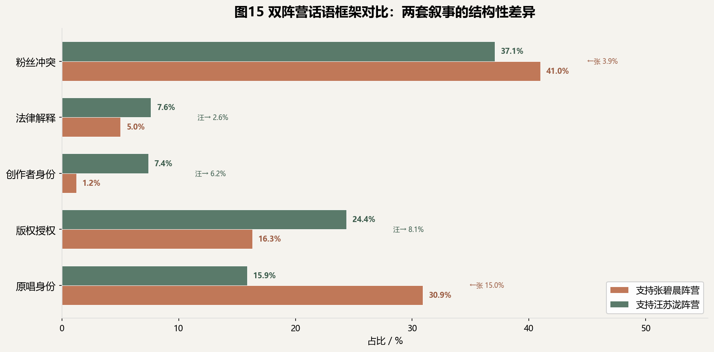
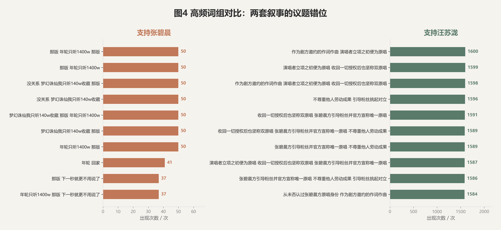
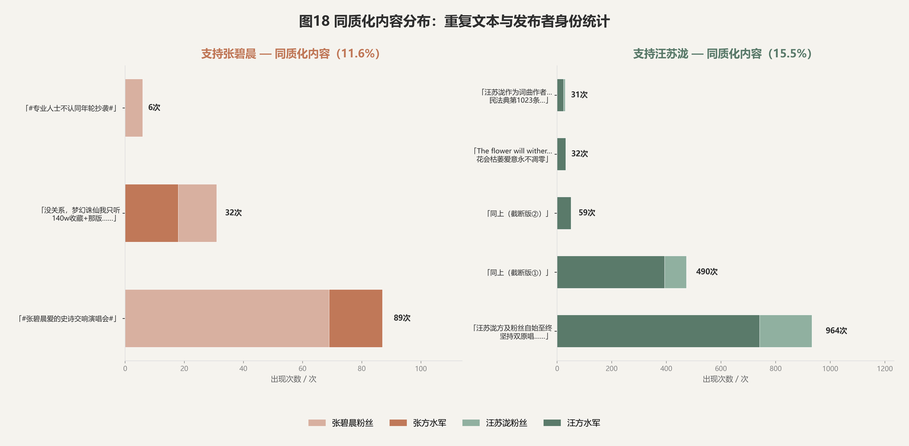
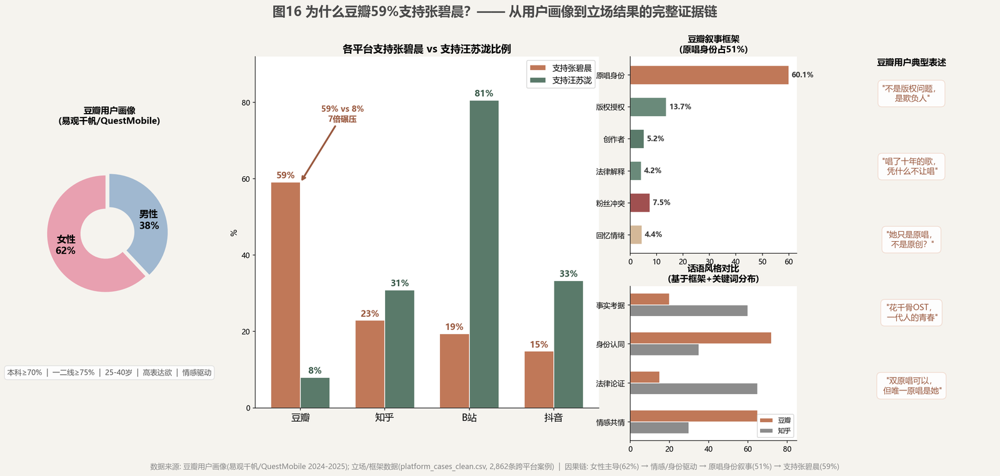
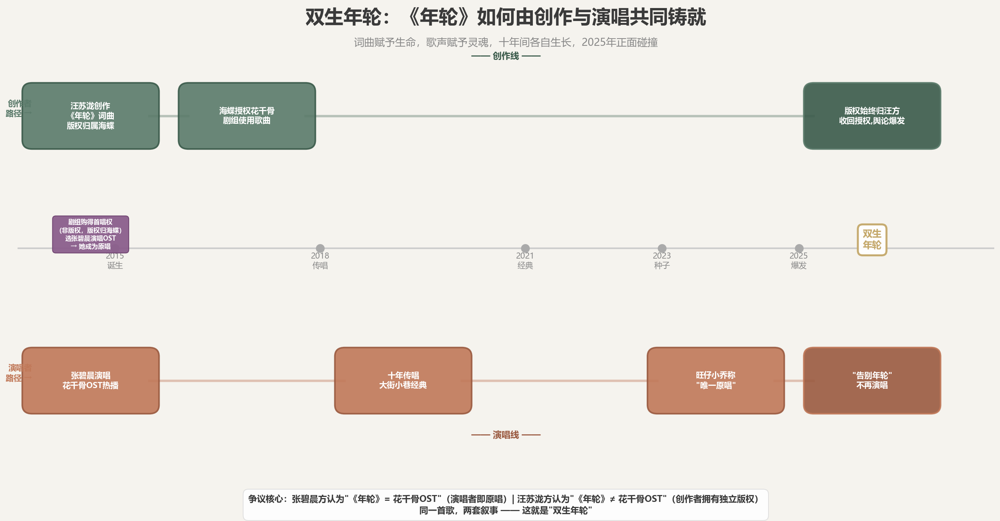

微博舆论场中《年轮》原唱与版权争议的传播可视分析

↓ 向下滚动开始探索
同一首《年轮》，如何在微博舆论场中分裂为两套并行叙事？
2025年7月，千万粉丝网红歌手旺仔小乔在直播翻唱《年轮》时，坚称"原唱只有张碧晨"，否认词曲作者汪苏泷的原唱身份。一句言论意外引爆了汪苏泷与张碧晨之间长达十年的版权归属争议。7月25日凌晨，汪苏泷方宣布收回《年轮》所有演唱授权；两小时后，张碧晨工作室发布声明，主张张碧晨为"唯一原唱"，并贴出2015年6月15日的首发时间线证据。随后，双方粉丝在微博展开激烈论战，话题迅速冲上热搜。
2025年的微博《年轮》之争开始了………………
"同一首歌吵了两个月，吵的到底是什么？"
"张碧晨是原唱——这话哪儿错了？"
"微博上两拨人吵架，用的词竟然完全不一样——你信吗？"
"为什么有人说'双原唱'，有人说'唯一原唱'——到底是几个原唱？"
本项目以微博数据为主、辅助平台为对照，围绕这场争议，通过可视化揭示社交网络中的传播模式、叙事分化与平台差异。
核心研究问题包括：
数据来源、字段、清洗与标注规则
本项目采用赤陶赭石与松烟墨绿的冷暖对照，表达"双生叙事"从共同记忆到自然分裂的过程：
配色灵感直接取自"年轮"的大地属性——赤陶如树木心材的温暖记忆，松烟如外层年轮的持续生长。重叠区采用半透明混合，使共性话题在视觉上自然呈现灰褐融合色。
问题1：这场争议是如何从普通讨论变成舆论事件的？

《年轮》争议并非“慢慢吵起来”的。每一次热度跃升都对应一个具体的引爆点：旺仔小乔直播言论点燃引线，QQ 音乐移除“原唱”标签放大矛盾，汪苏泷收回授权将版权问题摆上台面，张碧晨工作室声明让双方立场彻底公开化——随后粉丝大规模入场，舆论场全面引爆。在社交媒体环境中，争议不是累积出来的，是被一个接一个的信号弹打出来的。不同引爆点触发的互动类型也不同：当事人声明引发评论量暴涨，公开演唱推动发帖量激增，粉丝运营带动转发量冲高，事件驱动下的传播节奏各有侧重。
问题2：网友到底在支持谁？

《年轮》争议的舆论并非简单的两派对立，而是呈现三层结构：中立围观者、两大叙事阵营、反饭圈理性群体。全周期中，支持汪苏泷的版权叙事阵营占比始终高于支持张碧晨的情感叙事阵营，体现出法理视角在舆论中的更高共识度。事件推进中，中立讨论被持续挤压，阵营对立情绪快速走高，反感饭圈争议的声音在中期成为主流，反映出网民对粉丝对立行为的普遍抵触。整体立场随事件节点逐步固化，最终形成法理叙事占优、情感叙事边缘化的舆论格局。
问题3：这场争议是通过谁传播出去的？
这场争议没有唯一的引爆者，而是多个核心源微博并行驱动的多中心扩散。账号分工清晰得近乎残酷：粉丝号与普通用户是传播主力，把情绪和立场推送到每一个角落；媒体号则充当信息桥梁，负责事实层面的扩散。更关键的是，信息流被圈层壁垒切割——版权讨论困在专业圈层，情绪冲突却直通大众，头部节点一条微博便能点燃一片舆论场。在这场传播战中，谁能触达普通用户，谁就掌握了定义叙事的权力。
问题4：大家讨论的到底是什么？
从关键词到叙事框架，再到立场归属，桑基图呈现的不是对话，而是两套互不相通的话语体系的平行运转。“原唱”与“版权”各自构建了完整的逻辑闭环，情感记忆的话语与法律权利的话语之间不存在翻译的可能。双方都只选取了对自身有利的那部分事实，却都坚信自己掌握了全部真相——理性讨论的门槛因此被无限抬高，剩下的只有无效对峙。
这正是“双生年轮”叙事裂痕的根源所在。
数据背后的反直觉现象
"汪苏泷粉丝聊'版权'和'授权'，张碧晨粉丝聊'原唱'和'花千骨'"
"主帖在讲版权法，评论在讲'我听了十年'——这两拨人根本没对上话。"

分组条形图暴露了一个令人哑然的真相：双方不是在吵同一件事。支持张碧晨阵营的讨论高度集中于「原唱身份」（30.9%）与「粉丝冲突」（41.0%）——她们在乎的是演唱记忆、影视OST的情感联结，以及饭圈对立中的阵营归属；而支持汪苏泷阵营的讨论锚定在「版权授权」（24.4%）、「创作者身份」（7.4%）与「法律解释」（7.6%）——他们在乎的是著作权归属、创作权益与法理规则。两套话语的重心几乎零交集，一条巨大的认知鸿沟横亘在争议中央。
当一方在讲版权法与授权条款，另一方在回忆"我听了十年的OST"，这已经不是分歧，而是两个平行宇宙的各自运转。主帖讨论著作权归属的逻辑链条，评论区却在刷情感记忆与青春符号——没有共同的讨论基础，没有可互译的话语体系。争吵看似激烈，实则是一场隔空喊话的无效对峙。这种话题错位，正是"双生年轮"叙事分裂最赤裸的体现。
▎ "评论区有条评论，一字不改复制粘贴了1513遍——谁干的？"
汪方模板（重复 1513 次）：
汪苏泷方及粉丝自始至终坚持双原唱，从未否认过张碧晨方原唱身份，作为剧方邀约的作词作曲+演唱者立项之初便为原唱，收回一切授权后也坚称双原唱；张碧晨方引导粉丝并官方宣称唯一原唱，不尊重他人劳动成果，引导粉丝挑起对立，且列举的证据均为主观上传无真实性。原创音乐人无妄之灾—支持汪苏泷
▎ ━━━ 重复 1513 次 ━━━
张方模板（重复 32 次）：
没关系，梦幻诛仙我只听 140w 收藏+那版，年轮只听 1400w+那版，下一秒就更不用说了—支持张碧晨
▎ ━━━ 重复 32 次 ━━━

两套阵营，两种完全不同的表达方式。支持张碧晨的高频话术集中在情感表达——"我只听这个版本""花千骨的回忆"，重复次数有限，带着个人化的温度；支持汪苏泷的高频话术则是标准化的模板——"支持原创""版权归属明确"，单条评论一字不改被复制近1600次。一边是自发的情感倾诉，一边是有组织的模板刷屏，两套话语在表达方式上的差异，本身就是叙事割裂的缩影。

数据揭开了刷屏背后的操作链条。汪苏泷阵营同质化内容占比达15.5%，高于张碧晨阵营的11.6%，单条内容重复近千次的极端案例频频出现。这些批量复制的评论，发布者高度集中于粉丝号与疑似水军账号——争议后期的评论区，已经不是观点的自由市场，而是一场有组织的话术流水线。
高频词组与同质化内容数据指向同一个残酷的事实：《年轮》争议的后期，舆论场已经从观点讨论沦为模板化话术的大规模刷屏。单条评论一字不改地复制上千次，双方用统一的"控评文案"抢占话语阵地，普通用户的理性声音被彻底淹没。
这不是讨论，这是音量竞赛。双方不再试图沟通观点，而是通过重复话术强化己方叙事、压制对方声音。当评论区充斥着千篇一律的复制文案，原本关于歌曲本身的争议就已经死亡——剩下的，只是一场脱离事件核心的饭圈话术大战。
同一首歌，五个平台，五套截然不同的舆论气候。堆叠柱状图显示：B站支持汪苏泷的比例高达80.6%，豆瓣支持张碧晨的比例达59.1%——两个极端，彼此遥望。微博被反感饭圈的声音主导，抖音与知乎则以中立讨论为主。这不是同一场争议的不同侧面，而是同一首歌在不同世界里引发的五场独立战争。

豆瓣59.1%支持张碧晨，背后是平台基因的必然。豆瓣女性用户占六成以上，讨论氛围天然更倾向于情感共情与身份认同——"唱了十年的OST被收回"，这种叙事在豆瓣比版权法条更容易获得共鸣。再加上部分用户对男性创作者的天然警惕，同为女性的张碧晨更容易被视作"自己人"。不是豆瓣选了张碧晨，是豆瓣的用户结构和话语传统替她选了。
"豆瓣 59.1% 支持张碧晨，B站 80.6% 支持汪苏泷——同一首歌，两个世界。"
"在豆瓣发一条'支持汪苏泷'会怎样？——8%的人试过。"
"为什么豆瓣用户对这件事最生气？——因为她们觉得这不是版权问题，是欺负人。"
"知乎讲法律，豆瓣讲感情，B站讲原创——平台决定了'谁是对的'？"
"踩组扒了十年证据，知乎列了十条法条——谁赢了？答案是：谁都没赢，但各赢各的平台。"
"如果把豆瓣评论区搬到B站，会发生什么？——那可能是中文互联网最精彩的打架。"
从平台对比数据可以清晰看到，同一首《年轮》的争议，在不同平台分裂成了完全独立的舆论场：B站用户站在创作者视角，将版权与原创权益视为不容侵犯的底线；豆瓣用户更偏向情感叙事与身份认同，"唱了十年的OST，凭什么不让唱"成为主流逻辑；知乎聚焦法律条文与事实考据；微博则被饭圈对立情绪全面渗透。
用户画像与平台话语生态的双重作用，让每个平台都形成了自洽的"局部真相"。在豆瓣，59%的支持率不是偏袒，而是用户构成与叙事框架自然推导出的结果；在B站，80.6%的共识同样如此。跨平台的舆论割裂意味着，这场争议不存在统一的"胜负"——只有不同平台里各自闭环的叙事世界，和各自认定的"正义"。
从「一首歌」到「两个年轮」
《年轮》的出圈，离不开汪苏泷的创作和张碧晨的演唱。但当版权争议爆发，双方粉丝各自拿起不同的叙事武器——一边谈创作者权益，一边谈演唱者记忆——这首歌就在舆论场里裂成了两个版本。十年后，人们听到的早已不是同一首《年轮》。
这就是"双生年轮"的真正含义。
"双生年轮"——同根而生，裂纹而分，平台为壤，记忆成纹。
